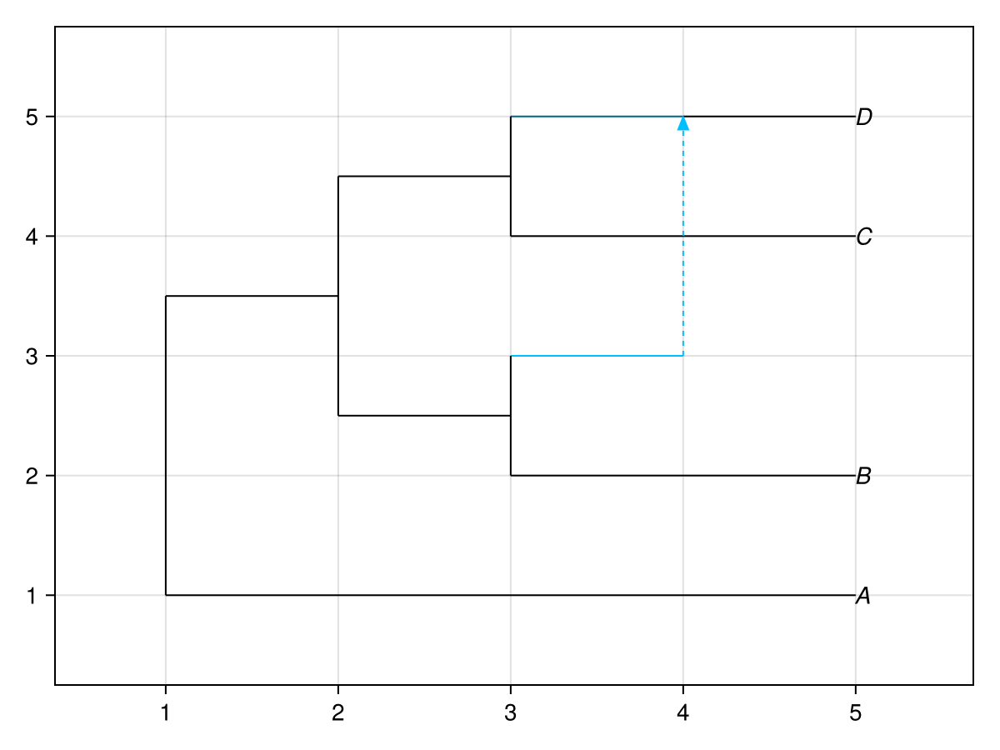
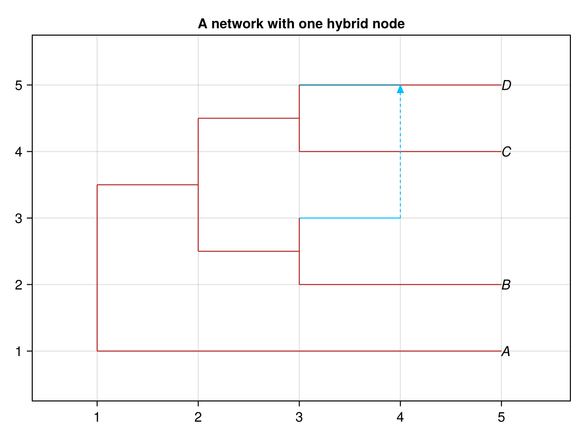
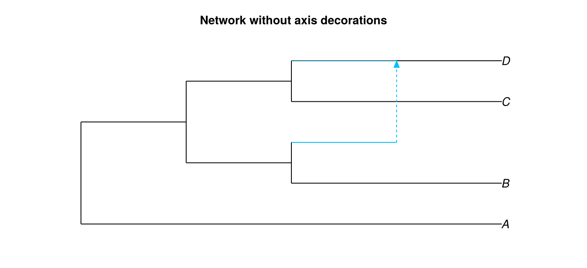
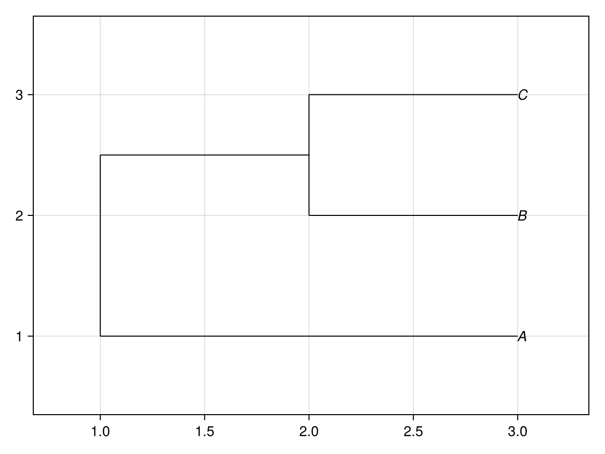

Getting started
PhyloMakie adds phylogenetic plots to Makie.jl, Julia's plotting ecosystem. Makie supplies figures, axes, and general plotting tools; PhyloMakie supplies the tree and network layout and annotations. No prior Makie experience is needed for this page.
After installation, load a Makie backend and PhyloMakie. A backend renders the plots: this manual uses CairoMakie for static figures, while GLMakie provides interactive desktop windows. Both expose Makie's plotting functions and types, including plot, Figure, and Axis.
using CairoMakie
using PhyloMakie
CairoMakie.activate!()Create a phylogeny
LineageNetwork is PhyloMakie's native concrete phylogeny type. It stores nodes, directed edges, a root, and metadata such as labels, edge lengths, and inheritance probabilities. It can represent both trees and networks with hybrid nodes.
Plotting accepts any subtype of AbstractPhylogeny that implements its accessor and validation interface. LineageNetwork implements that interface and is the type returned by PhyloMakie's readers. The phylogeny model and interface reference describes the type hierarchy and the methods required for other implementations.
This example reads a small network from an extended Newick string. The repeated #H1 identifies a hybrid node with 2 parents:
julia> phylogeny = parsephylogeny(NewickFormat(), "(A,((B,#H1),(C,(D)#H1)));")LineageNetwork(9 nodes, 9 edges, 4 leaves, 1 hybrid nodes, rooted)
For an existing PhyloNetworks.HybridNetwork, see Working with PhyloNetworks for conversion and plotting examples.
Make a first plot
Call Makie's plot with the phylogeny. PhyloMakie supplies the method that draws the network:
figaxisplot = plot(phylogeny)
figaxisplot
The figure, axis, and plot result
The result is a Makie.FigureAxisPlot, which groups the 3 objects created by plot. Its fields are used throughout this manual:
| Field | Object | Use |
|---|---|---|
figaxisplot.figure | Makie Figure, the container for the whole layout | Display or save the complete figure. |
figaxisplot.axis | Makie Axis, the plotting area with coordinates, ticks, and labels | Set a title or add Makie annotations to the same panel. |
figaxisplot.plot | The live phylogeny plot object | Update plot attributes or query node and edge coordinates. |
For example, set the panel title through .axis, change the edge color through .plot, and display the result through .figure:
figaxisplot.axis.title = "A network with one hybrid node"
update!(figaxisplot.plot; edgecolor = :firebrick)
figaxisplot.figure
Both figaxisplot and figaxisplot.figure can display the figure. In a script, use display(figaxisplot.figure) explicitly; the examples in this manual put the figure last so that Documenter renders it. Use Makie's save to write a file in the current directory:
save("first_phylogeny.svg", figaxisplot.figure)The example produces an SVG figure. CairoMakie also supports PNG and PDF output. Makie's figure guide explains the figure container and its layout in more detail.

Makie basics for phylogeny plots
For a larger layout, create the figure and axis explicitly. Figure is Makie's layout container; Axis(figure[1, 1]) places a plotting panel at row 1, column 1. Using figure[1, 2] would place another panel beside it.
Makie's hidedecorations! hides axis ticks, tick labels, axis labels, and grid lines. Its hidespines! hides the border lines around the panel. These optional formatting functions leave the phylogeny and its leaf labels visible.
Use plot! to add the phylogeny to the existing axis:
figure = Figure(size = (700, 320))
axis = Axis(figure[1, 1]; title = "Network without axis decorations")
hidedecorations!(axis)
hidespines!(axis)
plot_handle = plot!(
axis,
phylogeny;
showgamma = true,
useedgelength = false,
)
figure
The ! suffix follows Julia's convention for functions that modify an object. Here, plot! adds a plot to axis and returns the live plot object, which can be used directly with update! or node_positions. It does not return a FigureAxisPlot; retain the figure and axis variables when using this form. Neither plotting form modifies the input phylogeny.
Keep the x-axis decorations when a scale is useful, for example when plotting edge lengths. hideydecorations!(axis) hides only the y-axis decorations. Makie's Axis reference describes these controls, including how to hide only selected spines.
Makie also supplies scatter!, lines!, and text! for adding points, lines, and text to an existing axis. Adding other annotations using Makie shows how to combine them with PhyloMakie's coordinate queries.
For a broader introduction, follow Makie's getting started tutorial. Its plot methods guide explains the return values and the distinction between plot and plot!.
Other ways to create and plot a phylogeny
For literal content containing exactly one phylogeny, use a format-specific string literal:
literal_plot = plot(newick"(A, (B, C));")
literal_plot.figure
Both newick"..." and nexustreeblock"..." require exactly one parsed phylogeny. Use parsephylogenies when the content may contain multiple phylogenies, then select or plot each returned value explicitly. Use readphylogeny to read from a file path.
PhyloMakie also provides phylogenyplot and phylogenyplot! as package-specific aliases for plot and plot!:
alias_figaxisplot = phylogenyplot(
phylogeny;
showgamma = true,
showleaflabel = true,
)
alias_figaxisplot.figure
Next steps and runnable examples
Continue with Untangling the network, Better edges, or Adding data to change layouts and add information. The Example scripts index lists complete scripts and explains how to run them. Start with the basic network script for Newick and NEXUS input, or the reactive plot script for updates to an existing plot.